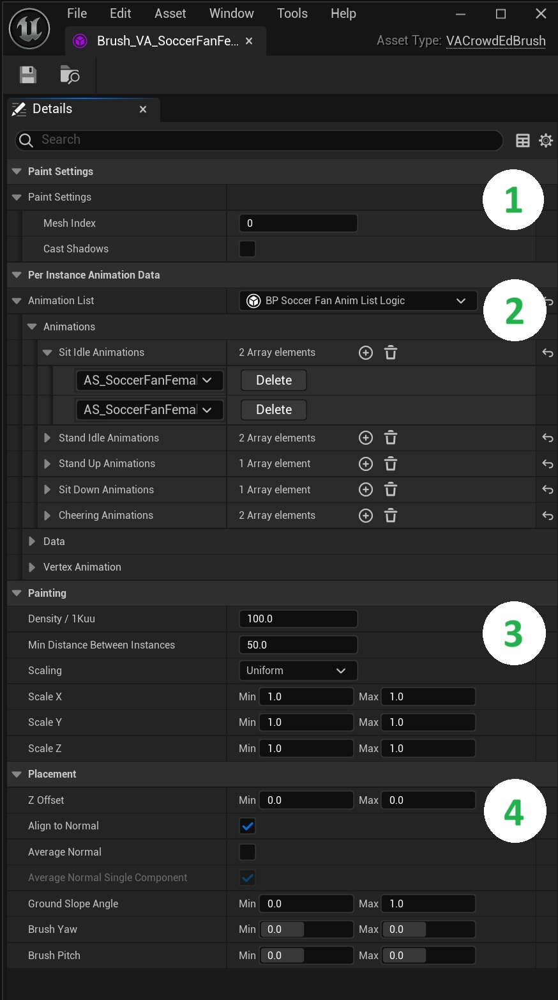
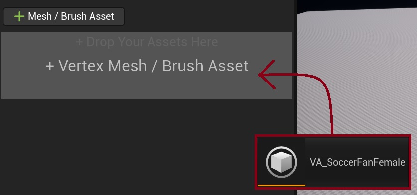
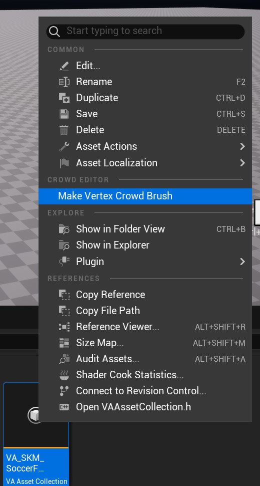

Crowd Brushes
Tools for controlling how crowd elements are placed and configured in your scene. Brushes define instance properties, animation settings, and placement rules for creating diverse and natural-looking crowds.

1. Paint Settings
- Mesh Index selection: If using Bone Animation types you can select which sub mesh to use here
- Shadow casting options: Toggle shadow casting on the instances when they are placed in the level
2. Per Instance Animation Data
- Animation List Logic: Select and edit your Animation Logic settings. For more information see Animation Logic
3. Painting Settings
- Density (per 1Kuu): Controls the number of instances placed within a 10m² area
- Min Distance Between Instances: Sets the minimum spacing required between newly placed instances within the paint brush area
- Scaling Mode: Select from various scaling constraints Uniform, Free and Lock XY/XZ/YZ
- Scale (X, Y, Z): Define minimum and maximum scale values for each axis - instances will be randomly scaled within these bounds
4. Placement Settings
- Z Offset: Adjusts the vertical position of instances in the level. Use different Min/Max values to create random height variations
- Align to Normal: Automatically orients instances to match the surface normal direction they are painted on (limited by Ground Slope Angle)
- Average Normal: Smooths instance orientation by averaging nearby surface normals on uneven terrain
- Average Normal Single Component: Limits normal averaging to a single component for more controlled orientation
- Ground Slope Angle: Defines the minimum and maximum slope angles where instances can be painted and aligned with normals
- Brush Yaw: Controls instance facing direction. Set different Min/Max values to create random rotations around the vertical axis
- Brush Pitch: Controls forward/backward tilt angle. Set Min/Max bounds to randomize the pitch of placed instances
Creating Brushes
Direct Addition
- Click "+ Mesh/Brush Asset" in Crowd Editor
- Select your VA Asset Collection
- Choose where to save the new brush asset
Drag and Drop
- Drag VA Asset Collection to "Drop Your Assets Here" area
- Choose where to save the new brush asset

Right Click Menu
- Right click your VA Asset Collection in the content browser and choose
Make Vertex Crowd Brush - Choose where to save the new brush asset

Read More
- Crowd Tools Editor Mode - Main editor interface
- VA Asset Collection - Animation asset management
- Animation Logic - Custom animation behaviors